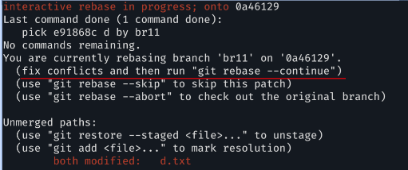
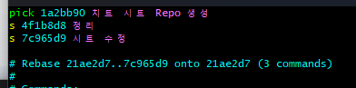
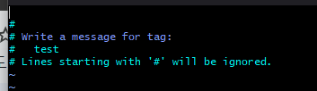

Git
- 1. 설치
- 2. 설정
- 3. 임시저장소와 형상 관리
- 4. 리모트 저장소
- 5. 브랜치
- 6. 머지(병합)
- 7. *특정 파일만 머지하고 싶을 때
- 8. 스태시(임시 저장)
- 9. untracked 파일 삭제(CLEAN)
- 10. diff
- 11. 리베이스
- 12. *리베이스의 conflict 처리
- 13. *n개의 커밋을 하나로 합치기
- 14. 복귀, 되돌리기(reset, revert)
- 15. 태그(꼬리표)
- 16. *refusing to merge unrelated histories 오류
- 17. *pull로 받을 수 없는 경우
-
설치
해당 디렉토리에 .git 설치
$> git init리모트 저장소에서 복사해오기
$> git clone [git url]설정한 디렉토리 이름으로 리모트에서 복사해오기
$> git clone [git url] [디렉토리명]설정
Git 설정 보기
$> git config --list이름 설정
*이름과 이메일이 맞아야 연결이 가능하다$> git config user.name #이름 보기$> git config user.name "이름" #이름 설정전역 이름 설정
*내 WD의 Git 유저 이름이 전부 바뀌기 때문에 각각 다르게 사용하고 싶다면 주의할 것$> git config user.name --global "이름"이메일 주소 설정
$> git config user.email #이메일 주소 보기$> git config user.email [이메일 주소] #이메일 주소 설정전역 이메일 주소 설정
*전역 이름 설정과 같이 주의할 것$> git config user.email --global [이메일 주소]설정 지우기
$> git config --unset [지울 설정 ex. user.name]GitHub 인증정보 cache 활성화
$> git config --global credential.helper cacheGit 설정 한 눈에 보기
*Git 활성화 된 디렉토리에서$> cat .git/config -
임시 저장소(STAGE)와 형상(SNAPSHOT) 관리
현재 Git 상태 확인
$> git statustracked 파일 확인
$> git ls-files$> git ls-files --stage #권한 및 해쉬값 등 더 자세한 정보 확인 가능$> git ls-files -s #파일 상태 정보를 함께 확인, --stage와 같다$> git ls-files -c #캐시에 있는 파일 확인$> git ls-files -d #삭제된 파일 확인$> git ls-files -o #untracked 파일 확인$> git ls-files -i #.gitignore에 추가한, git에서 무시되는 파일만 확인$> git ls-files -t #파일 이름 앞에 디렉토리 정보 추가$> git ls-files -z #파일 이름을 줄 바꿈 없이 확인$> git ls-files -u #unmerged, conflict난 파일을 보여줌임시저장소(stage)에 파일 추가
$> git add [파일명] #특정 파일 추가$> git add -A #로컬 파일 모두 추가add된 파일을 로컬에 유지하면서 unstage
$> git reset [파일명]staged가 아닌 파일들에서 차이점 보여주기
$> git diffstaged 상태에서 아직 commit 되지 않은 파일들의 차이점 보여주기
$> git diff --staged파일 삭제
*로컬 파일까지 삭제하니 주의할 것$> git rm [파일명]$> git rm -r [디렉토리명] #디렉토리 삭제$> git rm --cache [파일명] #로컬의 파일은 남겨두고 삭제$> git rm -r --cache [디렉토리명] #로컬의 디렉토리는 남겨두고 삭제파일 되돌리기
$> git restore [파일명] #최근 커밋된 상태로$> git restore --source [커밋 ID] [파일명] #특정 커밋의 상태로$> #커밋 ID는 git log --oneline으로 확인unstaged 상태로 만들기
$> git restore --staged [파일명] #untracked와 같다.commit 하기
*작업 내용을 기록한다$> git commit -m "[작업 내용에 대한 메세지]"add없이 commit 하기
*staged 상태인 파일만 가능$> git commit -am "[작업 내용에 대한 메세지]"
-
리모트 저장소(Remote Repository)
연결하기
*GitHub에서 remote repository 생성 후 진행$> cd [워킹 디렉토리] #생성해놓은 디렉토리로 이동url 추가
$> git remote add [리모트 이름] [리모트 url]$> cat .git/config #git 설정 확인$> git remote show [remote 이름] #리모트 연결 정보 확인Master 브랜치 이름 변경
*master 단어의 유래 때문에 main의 사용을 권장하고 있다.$> git branch -M main #main으로 브랜치 이름 설정파이프라인 연결
*-u 옵션을 사용하면 이후에는 같은 방향으로 push 단독 사용을 할 수 있다.$> git push -u [리모트 이름] [브랜치 이름]작업 완료 알림
*push를 해야 리모트 저장소에 반영이 된다. 작업 완료 후 할 것을 권장$> git push #서버에 로컬 저장소를 반영하기서버의 최신 소스 다운받기
$> git pull [리모트 이름] [브랜치 이름]$> git pull #fetch + merge와 같다. 파이프라인 연결하면 push와 마찬가지로 단독 사용 가능오류시 처리 방법
*pull을 먼저 하고 작업을 해야 한다.refusing to merge unrelated histories 오류
$> git pull [리모트 이름] [브랜치 이름] --allow-unrelated-histories리모트 연결 정보 확인 및 이름 변경
$> git remote -v #리모트 연결 정보 확인$> git remote add [리모트 이름] [리모트 url] #리모트 등록$> git remote rename [현재 리모트 이름] [바꿀 리모트 이름] #별칭 변경$> git remote rm [리모트 이름] #연결 해제리모트 저장소 정보 확인
$> git remote show [리모트 이름]기록 확인하기
$> git show #마지막 commit log 확인$> git log #전체 commit log 확인$> git log --raw #파일명 추가해서 확인$> git log --graph #커밋 트리를 그려서 보여준다$> git log --oneline #1줄로 줄여서 보여준다, '커밋 ID' 확인 가능$> git reflog --raw #각 브랜치의 HEAD pointer, 커밋 ID, 파일명 확인 가능 -
브랜치(BRANCH)
브랜치 사용하기
$> git branch #전체 브랜치 확인$> git branch -v #각 브랜치의 HEAD pointer 확인$> git branch -r #연결되어 있는 리모트 저장소 확인$> git branch -a #브랜치+리모트 확인$> git branch [브랜치 이름] #브랜치 생성$> git checkout [브랜치 이름] #브랜치 전환$> git checkout - #이전 브랜치로 전환$> git checkout -b [브랜치 이름] #브랜치 생성 + 전환$> git switch [브랜치 이름] #브랜치 전환$> git switch -c [브랜치 이름] #브랜치 생성 + 전환$> git merge [브랜치 이름]현재 브랜치의 기록을 보기
$> git log [브랜치 이름]$> git log [브랜치 이름] --graph #해당 브랜치의 커밋 트리를 보여준다HASH값 보기
$> git rev-parse [커밋 혹은 브랜치 이름] #해당 HASH값을 보여준다$> git rev-parse HEAD #HEAD pointer의 HASH값을 보여준다$> git rev-parse HEAD~1 #HEAD~1 = HEAD^ '^개수 or ~숫자를 통해 이전 커밋의 HASH값도 확인 가능브랜치 삭제하기
$> git branch -d [브랜치 이름] #현재 위치한 브랜치는 삭제 불가$> git branch -delete [브랜치 이름] #-d와 같다.$> git branch -D [브랜치 이름] #강제로 삭제한다.push를 이용한 브랜치 삭제
$> git push --delete [리모트 이름] [브랜치 이름]$> git push -d [리모트 이름] [브랜치 이름]리모트와 로컬 작업 중인 동일 파일이 diff가 있는데 pull로 받을 수 없는 경우
$> #여러가지 이유로 리모트가 로컬의 diff를 인식하지 못할 때가 있다.$> git fetch -p #로컬의 .git에 리모트 파일들을 가져온다$> git merge [리모트 이름]/[브랜치 이름] #리모트 파일을 로컬에 가져왔기 때문에 로컬에서 직접 비교 가능
-
머지(MERGE)
다른 브랜치의 diff들을 현재 브랜치에 병합하기
*항상 merge를 실행하는 쪽으로 이동해서 해야 한다
(땡겨온다는 개념)$> git fetch -p #로컬 .git에 리모트의 모든 파일들 다운받기$> git merge [브랜치 이름] #해당 브랜치와 현재 브랜치를 합치기특정 파일만 머지하고 싶을 때
$> git checkout -p [가져올 파일이 있는 브랜치명] -- [파일 경로]스태시(STASH)
작업중(commit 전)인데 긴급 수정이 있을 때 처리 방법
*스태시 (임시 저장 후 최근 커밋 상태로 돌아감)$> git stash save #현재 작업 중인 파일을 "스택 형식"으로 따로 저장한다.$> git stash save "label" #label에 해당하는 메세지를 남기며 저장한다.스태시 확인하기
$> cat .git/refs/stash #cat 명령어로 파일 직접 읽기$> git stash list #스태시 목록 불러오기$> #구분이 힘들 것 같다면 "label"를 적극 이용하자$> git stash show #스태시 log 보기$> git stash show -p [WIP] #상세 log 보기$> #WIP(Work In Progress)은 stash@{num}형태스태시 사용법
$> git stash pop #스태시 꺼내기 LIFO (auto-merge!)$> git stash apply stash@{스태시 번호}$> #스태시는 사라지지 않고 그 상태로만 복원$> git stash drop #마지막 스태시 삭제$> git stash drop stash@{스태시 번호} #특정 스태시 삭제스태시 저장된 내역으로 브랜치 생성
$> git stash branch [브랜치 이름] #임시로 사용하고 삭제할 브랜치$> #정확한 작업 내용을 이름으로 적어놓는 게 편할 수 있다 -
untracked 파일 삭제(CLEAN)
$> git clean -h #clean 도움말(옵션 보기)$> git clean -n #clean 시 삭제 될 파일 목록 보기$> #.gitignore에 정의된 파일은 대상이 아니다.untracked files only
$> git clean -d #untracked files only$> git clean -di #안전하게 하나하나 물어보면서 삭제$> git clean -df #묻지 않고 삭제untracked files with ingnore file too
$> git clean -x #with ignore too$> git clean -xi #안전하게 하나하나 물어보면서 삭제$> git clean -xf #묻지 않고 전부 삭제ingnore file only
$> git clean -X #only ignore filesdiff
staged가 아닌 파일들에서 차이점 보여주기
$> git diffstaged 상태에서 아직 commit 되지 않은 파일들의 차이점 보여주기
$> git diff --stagedconflict 이후 비교
$> git diff --ours #내 작업을 강조해서 보여준다.$> git diff --theirs #타 작업을 강조해서 보여준다.$> git diff --base
-
리베이스(REBASE)
브랜치를 땄던 시점을 최신화
3way-merge를 최소화 하기 위해 사용
*push 전에 꼭 rebase 하자!$> git rebase [브랜치 명] #해당 브랜치의 HEAD pointer로 base를 바꾼다리베이스의 confilct 처리
만약 같은 파일이 작업 중이었다면
$> git rebase --abort #rebase 취소$> git rebase --skip #main 소스 우선(내 것 무시)$> git rebase --continue #둘 다 수용--continue의 경우 conflict 상태로 진행
$> #conflict 해결 후$> git rebase --continue #한 번 더 리베이스 해야 마무리n개의 커밋을 하나로 합치기
$> git rebase -i HEAD~3 #예를 들어 3개의 커밋 목록을 선택
$> #pick = 남길 커밋 ID$> #s = squash 합칠 커밋 ID$> #수정하고 :wq(저장하고 종료) 하면 완료 $> #s로 선택한 커밋을 합치고 새로운 커밋이 생성된다 -
복귀(RESET)
커밋 ID를 변경하므로 push된 내역을 reset하면 안 된다
*push된 커밋은 reset 후 pull 요구$> git reset --soft #리모트에서 임시저장소로$> git reset --mixed #리모트에서 WD(로컬)로 *modified 상태$> git reset --hard #리모트에서 수정 전으로 초기화 *unmodified 상태, 수정내역 삭제$> git reset --merge #merge 취소사용 예시 1)
$> git reset --mixed HEAD~1 #HEAD pointer 1개 전으로 수정내역 보존하며 초기화$> git reset --hard HEAD~1 #수정내역 삭제하며 초기화사용 예시 2) 임시저장소 되돌리기
$> git add -A #staged 생성$> git reset #--mixed HEAD 생략$> #add 취소, staged -> modified로 돌아간다$> git reset --hard #수정내역까지 삭제사용 예시 3) merge 취소
$> git merge [브랜치 이름]$> git reser --merge HEAD~1 #merge 취소되돌리기(REVERT)
기존 커밋 남겨두고 되돌리기 (push된 내역 되돌리기)
$> git commit -m "커밋 메세지"$> git revert HEAD #방금 전 커밋 취소마지막 커밋 수정 (ID 변경)
$> git commit --amend -m "수정 메세지"confilct 났을 경우
$> git revert --continue #conflict 수동 merge$> git revert --skip #내 작업내역 삭제하고 되돌리기$> git revert --abort #revert 취소
-
태그(TAG)
큰 영역의 하나의 커밋으로 보면 된다.
*Annotated : 태그 + 정보
*Lightweight : 태그 이름만$> git tag [태그 이름] #태그 생성, 이 후 태그 메세지를 입력하는 창이 나온다.
tag 명령어, 사용법
$> git tag -l #태그 목록 보기$> git tag -d [태그 이름] #태그 삭제$> git show [태그 이름] #해당 태그의 변경 사항 상세 보기$> git checkout [태그 이름] #해당 태그로 전환$> git checkout -b [브랜치 이름] [태그 이름] #생성한 브랜치로 전환, 태그 생성$> git push origin [태그 이름] #push